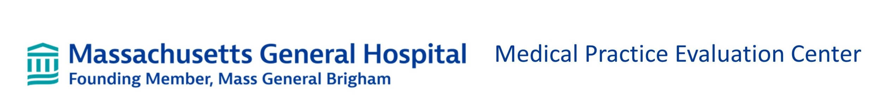

Resume/CV
Professional Experience
Data Analyst/Biostatistician, May 2025-Present
Meyers Lab, Aaron Diamond AIDS Research Center, Columbia University
Conduct data cleaning and analysis of injectable HIV treatment using real world data from 8 clinics as part of the ALAI UP project
Create R Shiny dashboard to enhance monitoring, evaluation, and learning efforts
Program Research Specialist II/Data Analyst, July 2022-July 2024
Office of Science, New York State Department of Health
Analyzed millions of childhood immunization records using SAS, SQL, and R in support of state polio response and measles preparedness
Designed data strategy and training for program for community health workers to encourage uptake of childhood immunizations
Produced ad-hoc data reports and literature reviews on emerging health topics shared with Health Commissioner
Developed models of poliovirus and measles transmission to estimate outbreak size and potential using R and Excel, in collaboration with CDC
Coordinated website strategy and advised on design of public dashboards, coordinating among 15 internal teams and 57 local health departments
Developed and analyzed surveys of New Yorkers attitudes toward seasonal vaccines using SAS and presented findings to internal stakeholders which resulted in journal publication
Project Coordinator, August 2021-July 2022
Medical Practice Evaluation Center, Massachusetts General Hospital

Led simulation modeling study of impact of COVID-19 on HIV care for youth with HIV resulting in first-author publication
Conducted additional modeling studies of life expectancy and optimal testing regimens for youth with HIV in the US and South Africa
Executed data cleaning and analysis of COVID-19 contact tracing data for thousands of students from Massachusetts public schools using R
Presented results at internal meetings and conferences, using engaging and insightful visualizations
Research Assistant, August 2020-July 2021
Performed agent-based simulation modeling analyses to answer health policy questions related to youth with HIV
Developed a new webtool using R Shiny and python to forecast global antiretroviral drug needs for children with HIV for the WHO
Analyzed data from cohort studies, clinical trials, and observational databases to inform model inputs
Undergraduate Researcher, January 2019 – July 2020
Fang-Yen Lab, University of Pennsylvania Bioengineering
Conducted independent research into the biomechanics of C. Elegans pharyngeal pumping
Planned and carried out various assays and experiments to understand worm feeding behavior
Collected high speed footage of the microscopic worms using DIC microscopy
Analyzed video data and synthesized results into clear graphs and figures
Presented results of research and contributed to writing of published journal article
Unit Head, June 2015 – August 2019
Camp Yavneh, Northwood, NH
Managed a staff of 11 counselors, including providing performance feedback and mediating disputes
Organized and planned leadership, educational, and recreational activities for 60 adolescent campers
Coordinated day-to-day logistics, planned daily programs and events, and led field trips out of camp
Corresponded with senior camp staff to address camper and counselor issues
Education
Columbia Mailman School of Public Health, New York, NY

Expected graduation: May, 2026
Masters of Science in Biostatistics
Concentration: Public Health Data Science
University of Pennsylvania, Philadelphia, PA, May 2020
Bachelor of Arts | Magna Cum Laude | Benjamin Franklin Scholar (80/2,500 students)
Major: Biological Physics (with Distinction) | Minor: Religious Studies
Skills and interests
Technical skills: R/Rstudio, Python, SQL, SAS, MATLAB, Excel, Git/Github, Linear Algebra, Ordinary and Partial Differential Equations
Language: Fluent in Hebrew
Interests: Rock climbing, Guitar, Cooking, Running, Cycling